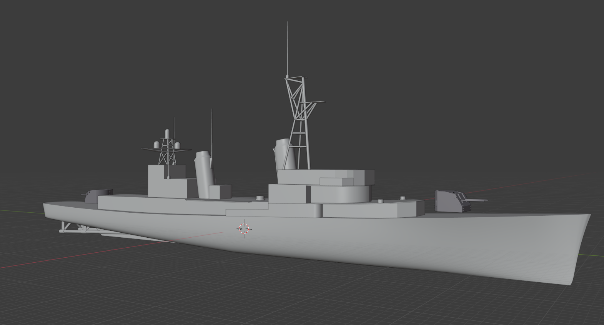

DotMod is an attempt to create a more organized mod that is closer to vanilla vessel and weapons characteristics than other, currently-existing mods. This also generally results in more realistic sensor comparisons. DotMod also adds numerous new vessels and weapons to the base game as well as new mechanics, new effects, and new User Interface.
As of December 2021 DotMod adds over 50 new weapons to the base game. It also adds some models converted from SketchUp model files, such as the Iowa-class Battleship and the Arleigh Burke-class Destroyer. More importantly DotMod adds 10 brand new, from scratch, vessel models developed for Cold Waters by our small team of modellers and texture artists.
DotMod additionally attemps to unify and make more fair the gameplay, with some changes to the behaviour of weapons and enemy vessels.
 Cold Waters was developed developed and published by Killerfish Games in 2017 using the Unity Engine. The original game code was ported to PC from what was originally intended to be a mobile game and comes with some of the limitations imposed by that.
Cold Waters was developed developed and published by Killerfish Games in 2017 using the Unity Engine. The original game code was ported to PC from what was originally intended to be a mobile game and comes with some of the limitations imposed by that.
Chief among the limitations in the base game was the lack of any ability to import new models to the game. This is because Unity has no default run time ability to parse common 3D object files such as FBX or OBJ.
Independently a number of modders came up with new ways of adding models to the base game, some through loading of OBJ files and some by using Unity's AssetBundle system. The AssetBundle won out and is the basis of much of the new content you see in game today.